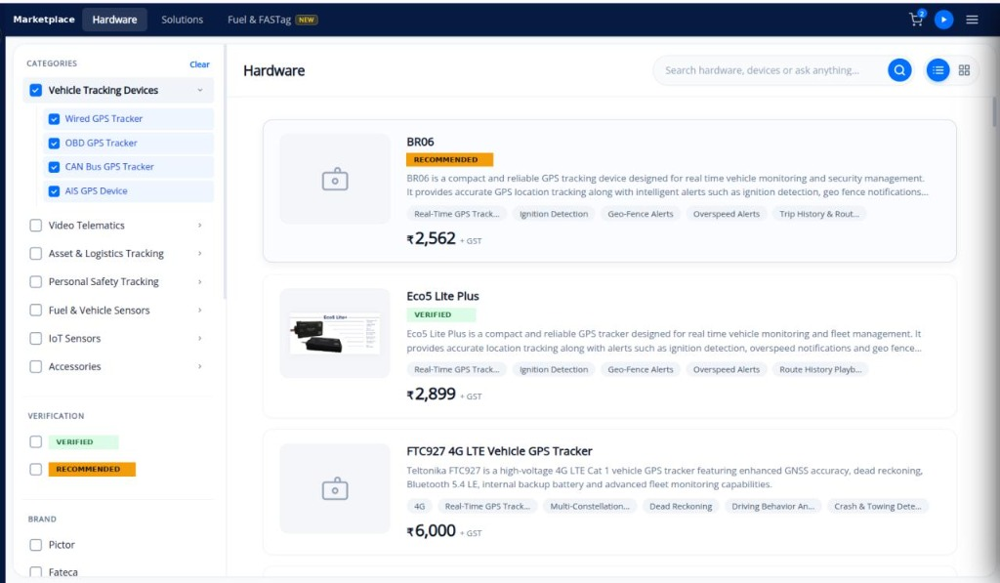
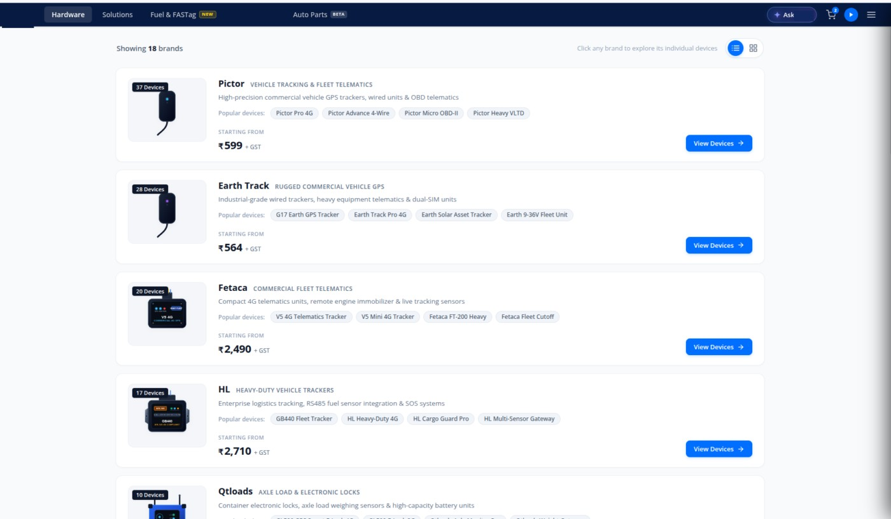
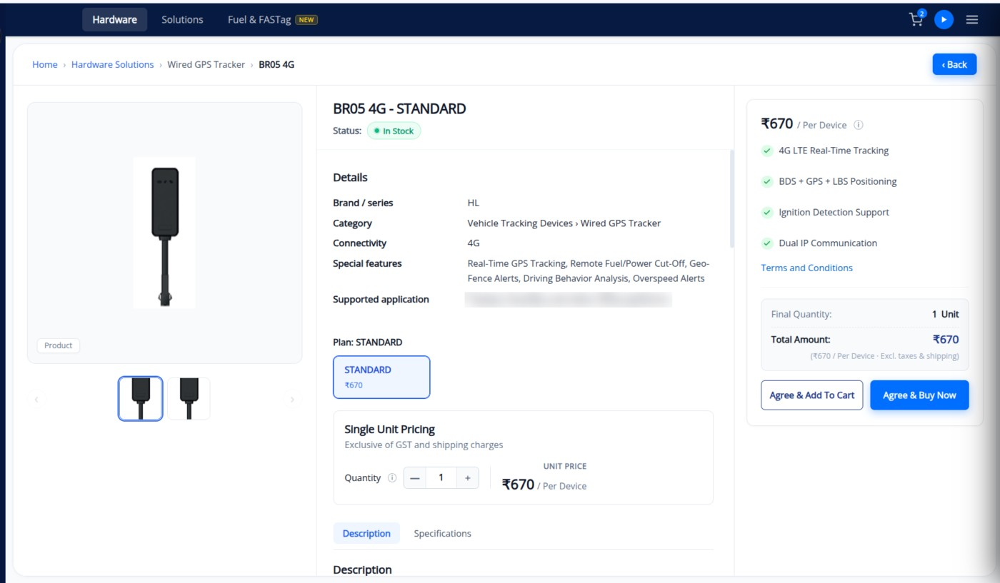

1. Context
I joined as 1 of 3 founding team members responsible for Product and Business Development on a B2B fleet-telematics marketplace in India, built in strategic collaboration with a Tier-1 global enterprise mobility partner (client confidential under NDA). The platform serves commercial fleet operators, logistics providers, and system integrators who procure GPS tracking hardware, dashcams, fuel sensors, FASTag, and telematics software.
The platform operates in a private launch with existing clients. As the technical and commercial bridge across organizations, my mandate spanned three key pillars: leading the UI 2.0 platform transformation, spearheading the functional design and catalog data grounding for the conversational AI assistant, and structuring the business strategy shift toward recurring operational services.
2. Problem
During the early pre-public-launch phase, customer support tickets, discovery sessions with system integrators, and live order logs surfaced four core operational bottlenecks that constrained adoption and unit economics:
- Search & Catalog Discovery Friction: The original catalog lacked query autocomplete, keyword suggestions, and standardized product listings. System integrators searching for state-mandated devices (e.g., AIS 140, dual-IP transmission, or OBD units) could not find compliant SKUs without manual support assistance.
- Fulfillment & Invoice Clearance Failures: The checkout funnel allowed unvalidated submissions. Missing GSTIN details, inaccurate mobile numbers, and unverified billing addresses led to post-order dispatch rejections, customer invoicing discrepancies, and costly manual accounting rework.
- Low-Margin Hardware Trap: The business model initially relied on one-time hardware retail margins, missing the high-margin recurring operational opportunities (such as automated FASTag replenishment, fuel tracking subscriptions, and insurance workflows) essential for long-term customer lifetime value.
- Pre-Sales Technical Overhead: Commercial fleet buyers frequently needed answers on hardware wiring compatibility, government RTO regulations, and anti-theft sensors before purchasing. Sales executives were overwhelmed answering repetitive technical questions rather than closing high-value accounts.
3. Users and Evidence
To ground every requirement in quantitative and qualitative field evidence, I gathered discovery data directly from customer interactions and operational audits:
- 50+ System Integrators in Discovery: Led partner discovery sessions, on-site client meetings, and technical product demos. System integrators install telematics hardware across commercial fleets and require rapid bulk SKU configuration, certified device compliance, and reliable post-sale fulfillment.
- Order Rejection & Accounting Audits: Audited checkout error logs with our accounts and billing teams, discovering that over 30% of post-order support tickets originated from missing GST numbers or mismatched billing addresses that stalled tax invoice generation.
- Transit Corridor Realities & Maintenance Access: In-depth calls with fleet operators revealed that device adoption was capped by maintenance anxiety: if a GPS tracker fails mid-route, operators lacked local service support. This discovery directly inspired our strategic ecosystem tie-up with 8,000+ certified service garages across India.
4. Key Decisions and Trade-offs
Balancing speed to market with enterprise compliance required deliberate architectural and business trade-offs:
Trade-off 1: Shifting Business Model from Hardware Margins to Recurring Services
Hardware hardware margins are inherently compressed by distributor competition. Instead of relying purely on one-time device sales, I championed pivoting the commercial model toward recurring operational services (FASTag, fuel monitoring, insurance workflows).
Action: Restructured the product offerings around FASTag integration, securing the institutional compliance agreement end to end with accounts and CA teams, and framed the partner value proposition around "Invisible Infrastructure" rather than commodity boxes.
Trade-off 2: Decoupled AI Assistant vs Monolithic Platform Overhaul
Fleet operators required conversational answers on WhatsApp, while web buyers needed an instant AI search interface. Building full transactional checkout directly within a chat thread required complex banking and legal integrations that would delay launch by months.
Decision: We split development into two distinct phases:
- Phase 1 (Delivered in ~1 month): Modernized the web UI 2.0, deployed the web-based AI search assistant grounded on product catalog data (~0ms latency indexing), and launched a standalone WhatsApp bot for technical inquiries in parallel.
- Phase 2 (Planned): Merge the AI assistant and WhatsApp bot into a single conversational transactional pipeline, allowing buyers to complete orders directly within chat.
Trade-off 3: Strict Checkout Validation Gates vs Funnel Drop-off
Adding strict mandatory field validation (GSTIN, mobile format, verified billing address) risked minor friction during checkout. However, unchecked submissions were causing severe post-order dispatch failures. We prioritized operational accuracy, enforcing front-end validation that reduced billing discrepancies to near zero.
5. What I Built
I led execution across three primary pillars — platform modernization, technical AI integration, and commercial GTM strategy:
1. UI/UX Transformation & Platform Modernization (UI 2.0)
- Self-Initiated 12-Requirement PRD: Authored a complete PRD defining 12 prioritized requirements (P0/P1 scope), user stories, granular acceptance criteria, edge cases, business rules, and success metrics.
- Clickable Prototype with Claude Code: Built the v2 clickable prototype using Claude Code, modeling advanced search, autocomplete suggestions, the "Verified" filter, detailed listing views, and GST-ready checkout; presented to executive leadership and enterprise partners, and adopted by the UI team as the baseline design reference.
- Search & Discovery Overhaul: Introduced Advanced Search with autocomplete query suggestions, promotional banner system for campaigns, and standardized card/list views.
- Checkout & Billing Validation: Enforced mandatory field validation (GSTIN, mobile number) and billing address precision, cutting operational dispatch errors.
- FASTag Module Optimization: Revamped the FASTag interface with clear compliance positioning, targeted search keywords, and high-visibility CTAs to accelerate partner onboarding.
- Cross-Functional Stakeholder Alignment: Coordinated between internal UI designers, enterprise mobility partner technical leads, and executive leadership in daily standups to ship the UI 2.0 roadmap.
2. AI Search Assistant Integration (LLM Implementation)
- Technical Liaison Leadership: Served as the primary product bridge between internal software engineering and the enterprise partner's mobility platform engineering team.
- Solution Design & Data Grounding: Owned the High-Level Design (HLD) and functional data mapping connecting product catalogs, technical parameters, pricing slabs, and order data to the AI model, ensuring grounded, deterministic answers and eliminating hallucinations.
- Performance & Latency Tuning: Managed the API lifecycle, catalog indexing architecture (~0ms latency), authentication and security protocols, and production performance tuning.
- UAT & System Testing Ownership: Coordinated comprehensive UAT and system testing phases, driving technical action items across both engineering organizations through to production launch.
3. Business Strategy & Ecosystem Expansion (GTM)
- Strategic Model Pivot: Transitioned business positioning from low-margin hardware retail toward recurring operational offerings (FASTag, fuel monitoring, insurance).
- SI Partner Program: Created the complete System Integrator Partner Program, including GTM enablement decks, sales pitch scripts, and collateral communicating the "Invisible Infrastructure" value proposition.
- Nationwide Service Network (8,000+ Garages): Championed an ecosystem service network tie-up with 8,000+ garages across India to streamline hardware installation and maintenance fulfillment for commercial fleet clients.







6. Outcome
The transition from discovery feedback to a functional Claude Code prototype, aligned engineering sprints, and partner enablement produced concrete commercial and product impact:
- Rapid 1-Month Cross-Functional Delivery: Engineering, UI, and AI teams delivered the UI 2.0 redesign, AI-enabled search (phase 1), and standalone WhatsApp bot (phase 1) in about one month through daily standups.
- INR 2.47 Cr in Platform Order Value: Platform order value reached INR 2.47 Cr across 6 months (May to Oct 2026) with existing clients in private launch, including one single INR 60 lakh order.
- Nationwide Service Ecosystem (8,000+ Garages): Established an ecosystem tie-up with 8,000+ certified service garages across India, eliminating partner fulfillment friction for installation and maintenance.
- Operational Error Reduction: Enforced mandatory GSTIN and mobile verification at checkout, reducing order dispatch rejections and billing invoice errors to near zero.
- Strategic Model Pivot: Successfully shifted customer conversations from commodity hardware price competition toward high-margin recurring operational offerings (FASTag, fuel monitoring).
7. What I Would Do Differently
Reflecting on this product cycle, there are key areas I would approach differently in future enterprise marketplace builds:
- Instrumenting Automated Checkout Funnel Analytics Early: In Phase 1, we relied on manual database order reconciliation and direct account executive updates. Instrumenting automated funnel event telemetry from day one would have given us real-time drop-off visibility between cart addition and payment gateway completion.
- Involving CA & Compliance Partners During PRD Drafting: The FASTag partnership experienced procedural delays due to financial compliance review cycles. Involving the CA and legal accounts teams during initial PRD scoping—rather than post-prototype—would have compressed the partnership turnaround by at least two weeks.
- Establishing Structured Usability Testing Cohorts: While our discovery with 50+ system integrators surfaced critical pain points, usability testing of the clickable prototype was conducted ad-hoc during sales calls. A dedicated testing cohort of 5 recurring integrators would have enabled tighter quantitative benchmarking on task completion speed.